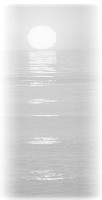

| Poèmes |
(Initialement en coréen) |

D'innombrables sons sans bruit se rassemblent,
Embrassez-les d'une Lumière...
Chansons de gouttelettes qui s'écoulent sur dix mille miles,
Histoires de gouttelettes qui éveillent dix mille jours, nuits,
Vies épuisées des champs sauvages,
Ont tous suivi et se sont converti au sein de la Lumière.
Ceci est de l'amour sans bornes.